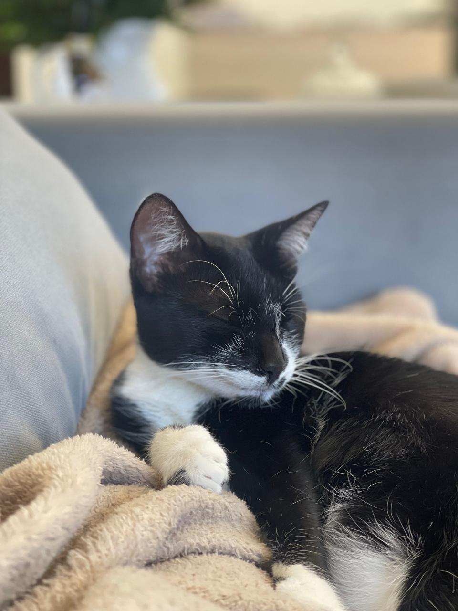
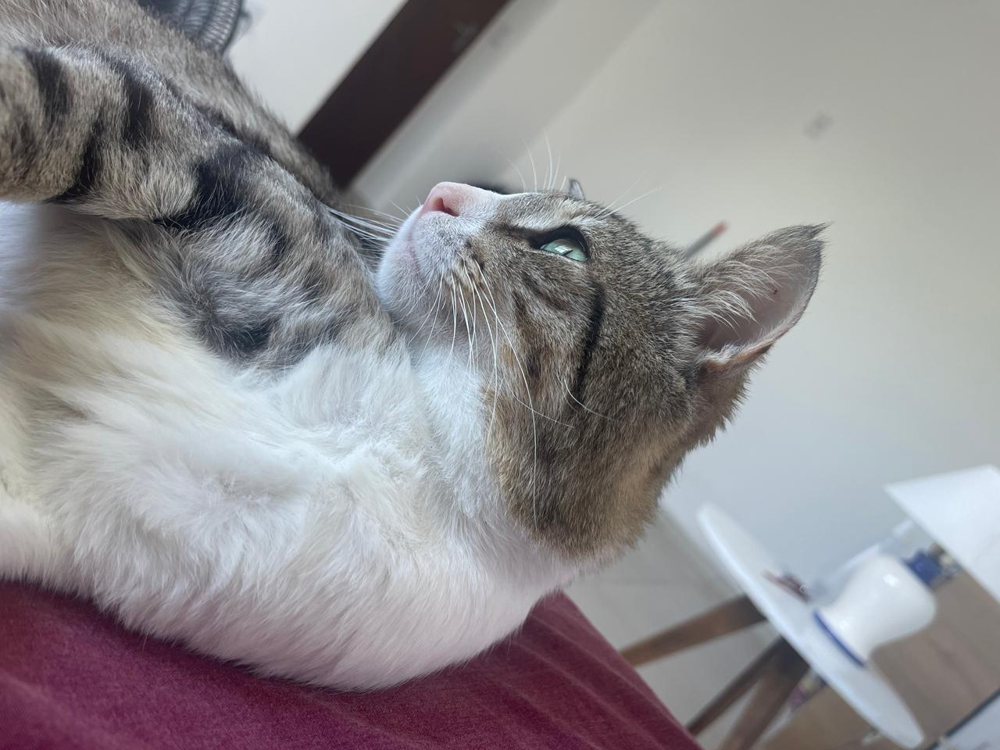
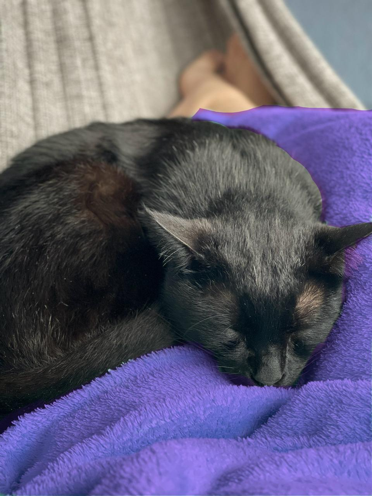
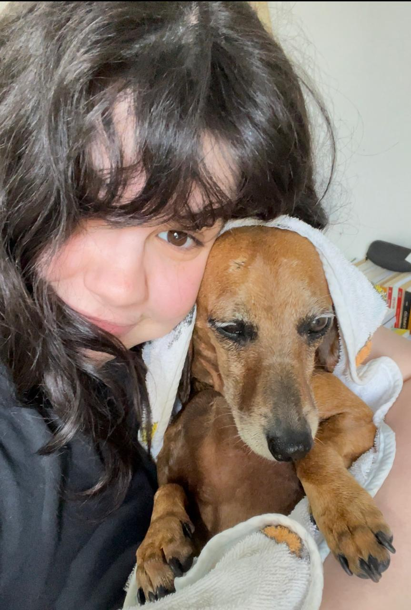

Animals
Animals throughout life, rescued animals, photographs, and memories of companionship.
Rescued Animals
Animals found, sheltered, or rehabilitated

Lili
This is my girl. I found her at a construction site next to the store I worked at in Tramandaí. She has traveled everywhere with me and this year we drove 9 hours to move to Curitiba. She's currently at my side while I write this.

Ganso
Ganso was found bleeding and without his right cheek, dying from a skin fungus. I treated him for eleven months in my small bathroom. Ganso now lives with my lovely neighbor, Nette, in Tramandaí, and is living his best life. Which he deserves after fighting through a long, hard year for it. He's also fat. But we love it.
Companion Animals
Animals and pets through different periods

Jiji
Jiji was found in the street as a kitten with a bunch of his littermates. He is Lili's adopted brother and lives the stereotypical beach life with my mom (who once hated cats, but Jiji has a way with people).

Sky
Sky was born with a congenital defect on her paws. We think it might be because her parents were related. She, however, lives happily and doesn't mind her little weird, bent legs, and we don't either. She is old now and lives with a benign tumor in her throat. She's my sister in dog form.
Caramelo
This guy roams the street like he owns it. He followed me home one day after work and my brother got attached. Our entire street helps take care of him and other dogs. I'm pretty sure I'll find him laying on the tree shades when I go visit.